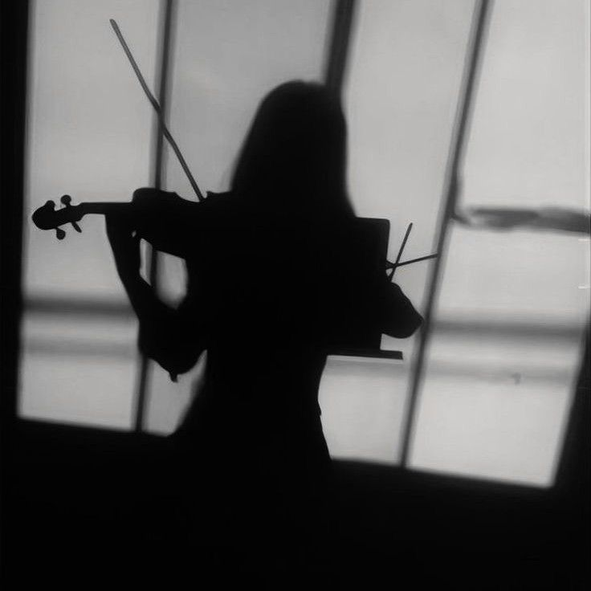

The Violin: A Personal Connection
The violin is more than just an instrument to me—it's an extension of my emotions. Every note feels like a story quietly unfolding.
Through its sound, I express feelings that words cannot hold. Each performance deepens my bond with the instrument.
Captured Moments
